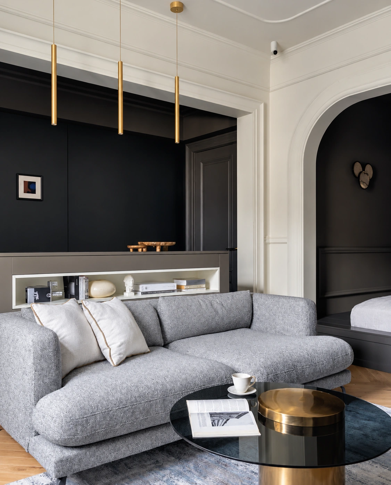

Журнал OTUTTO
В пространстве
дизайна.
Интерьеры, публикации и встречи с профессиональным сообществом.

Мебель в интерьере
Medici.
Продолжение архитектуры
Смотреть историю События / 2026
07—09октября
«Русский дом»
Участие в капсульной коллекции «Салон нового века».
Об участии